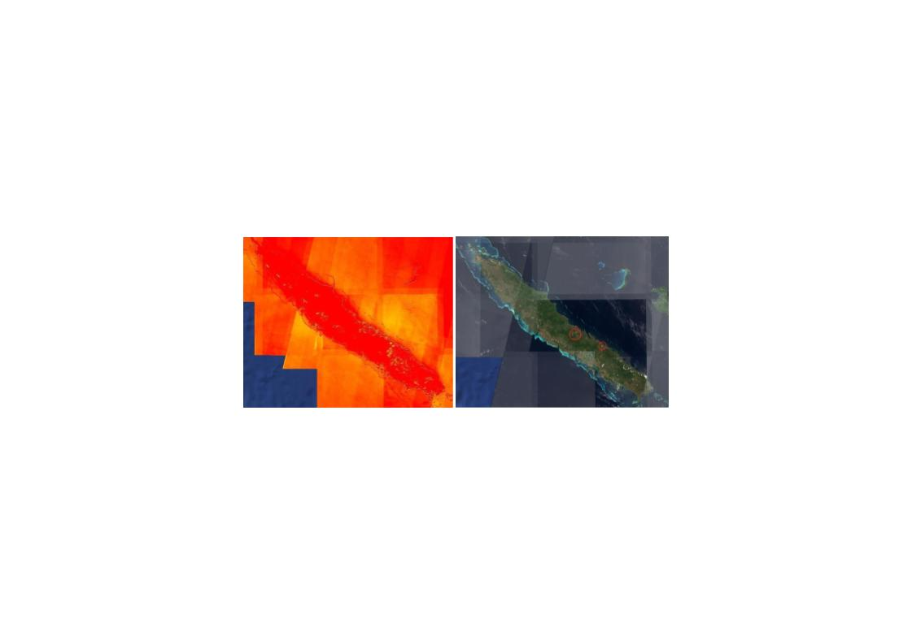
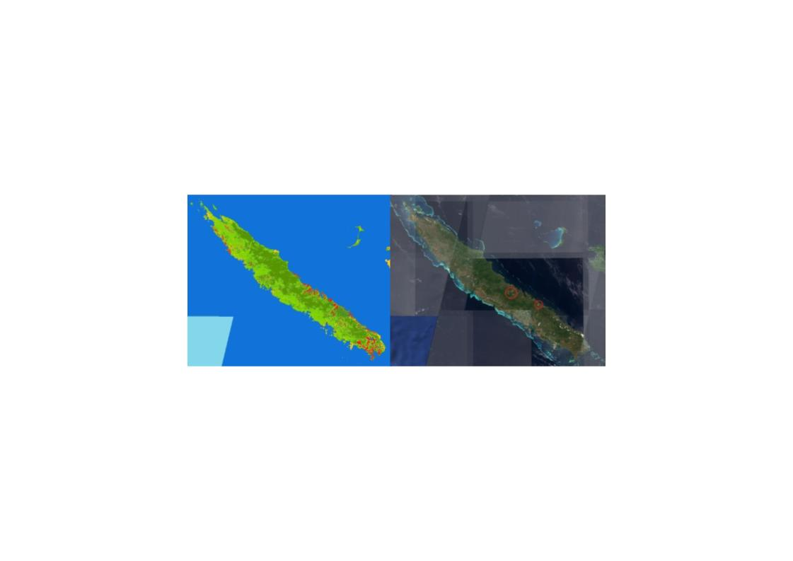
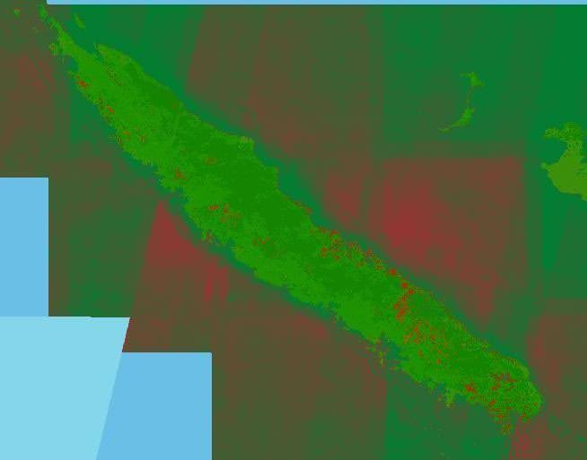

Enhancing Mineral Exploration through Remote Sensing and Machine Learning: A Focus on Cobalt and Nickel in New Caledonia
Background
Traditional mineral exploration has historically depended on extensive field surveys and costly drilling operations to locate economically viable deposits. As global demand for renewable energy technologies and electric vehicles has grown rapidly, so too has the need for critical minerals such as cobalt (Co) and nickel (Ni). These two minerals are frequently found together, cobalt occurring at approximately 110 ppm and nickel at 16 mg/kg in ultramafic rock, making their co-location advantageous for exploration. When ultramafic rock weathers it forms laterites, which can contain more concentrated levels of these elements: limonite forms where cobalt concentrations are higher and saprolite where nickel dominates.
This project investigates whether remote sensing methods, specifically custom spectral indices and a machine learning classification algorithm, can be applied through Google Earth Engine (GEE) to accurately identify Co-Ni deposits and reduce the cost and environmental impact of traditional exploration. The island of New Caledonia was selected as the study area due to its status as a major global contributor to cobalt and nickel supply.
Data
The primary source of spectral data was the Sentinel-2 satellite, launched in 2015 by the European Space Agency. Six bands from the Sentinel-2 dataset were used: Blue (B2, ~496 nm), Green (B3, ~560 nm), Red (B4, ~664 nm), Red Edge 3 (B7, ~782 nm), Near-Infrared (B8, ~835 nm), and Shortwave Infrared 2 (B12, ~2202 nm). These bands were sourced via the Earth Engine Data Catalog. Images were filtered to allow no more than 5% cloud cover to limit atmospheric interference. A Normalized Difference Vegetation Index (NDVI) mask was applied to reduce signal contamination from the island's heavy tropical vegetation, which absorbs strongly in the infrared range.
NASA's Global Digital Elevation Model (DEM) was incorporated to restrict analysis to the topographic zones where mineral-rich laterites and ultramafic soils are most found. Locations of known Co-Ni mining operations across New Caledonia were used both as training data for the machine learning classifier and as a reference against which the accuracy of both methods was evaluated.
Methods
Two independent remote sensing methods were developed and then combined. The first method involved the formulation of two custom spectral indices designed to highlight the surface signatures of laterite and ultramafic rock. Both indices were developed iteratively by testing band combinations against reference maps of known Ni-Co mining operations. The two resulting index maps were then averaged into a single combined index map, and the DEM topographic filter was applied to complete the spectral indices output.
Laterite Normalized Difference Index (LNDI), using Sentinel-2 SWIR (B12, ~2202 nm) and Red Edge (B7, ~782 nm) to highlight clay minerals and iron and aluminum oxides common in lateritic soils.
Ultramafic Normalized Difference Index (UNDI), using Sentinel-2 SWIR (B12, ~2202 nm) and NIR (B8, ~835 nm) to highlight mineral assemblages characteristic of ultramafic rock and its weathered derivatives.
The second method applied supervised classification via a Random Forest (RF) algorithm within Google Earth Engine. Training data were manually compiled by visually selecting representative points for five land-cover classes: forest, development/barren, water, herbaceous, and Cobalt/Nickel. Known mining operation locations were used to populate the Cobalt/Nickel class. Due to memory constraints in Google Earth Engine, equal numbers of points could not always be assigned to each class. Once trained, the RF algorithm produced a classified prediction map across the entire region of interest.
In the final stage of the project, the machine learning map was overlaid on the spectral indices map, with both maps brought to a common color scheme using red to indicate predicted Co-Ni regions, to create a third composite map that leverages the strengths of both approaches.
Results
The combined LNDI, UNDI, and DEM spectral index map produced a spatially coherent output that correctly highlighted the locations of most known mining operations across New Caledonia when compared to a true-color image of the island. Some errors were present, most notably along portions of the coastline and in urban areas, likely attributable to those surfaces' interactions with infrared light. Beyond the known mining sites, the map also identified areas where no mining is currently occurring, suggesting the possible presence of Co-Ni deposits not yet under extraction.
The Random Forest classification map produced similarly useful results. Known mining operation areas were correctly classified in the Cobalt/Nickel category, and the map also predicted additional areas of potential deposits beyond current operations. As with the spectral index output, any newly predicted areas would require field confirmation before extraction activity could be initiated.
The composite map produced by overlaying the machine learning classification on the spectral indices output combined the predictive strengths of both methods. Regions flagged by only one method became visible in the composite, and areas identified by both appeared as stronger red signals, indicating greater confidence in a Co-Ni prediction. Using spatial correspondence with known mining operations as an accuracy metric, both individual methods and the composite map performed well for the study area, providing positive evidence that remote sensing through spectral indices and machine learning can be a viable and less environmentally invasive tool for critical mineral exploration.
Figures

Figure 1: Combined LNDI, UNDI, and DEM spectral index map of New Caledonia (left) alongside a true-color Sentinel-2 image (right). Warmer colors indicate higher predicted Co-Ni likelihood; red circles mark known mining operations.

Figure 2: Random Forest classification output for New Caledonia (left) alongside a true-color Sentinel-2 image (right). Dark green = forest; green = herbaceous; yellow = development/barren; red = predicted Co-Ni deposit. Red circles mark known mining operations.

Figure 3: Composite map produced by overlaying the Random Forest classification onto the spectral indices map, with red indicating predicted Co-Ni regions. Stronger red signals reflect areas flagged by both methods.